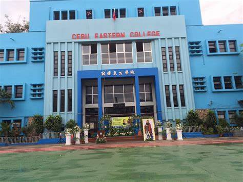
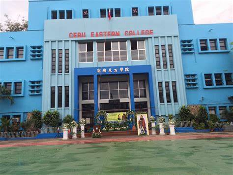

Project 1: Personal Blog
Check out our blog where We Share our Thougths and experiences.
Location
Cebu Eastern College Map
Check out our blog where We Share our Thougths and experiences.
Cebu Eastern College Map
❤Black Heart:The range of intense emotions, sometimes dark, form of love, depending heavily on context.
🙂Smiling Face:Expresses happiness, joy, and amusement.
🌎Globe Showing:Represents the world, or travel.
👍Thumbs Up Sign:Agreement, or support.
😂Face with Tears of Joy: Extreme amusement.